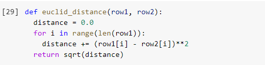
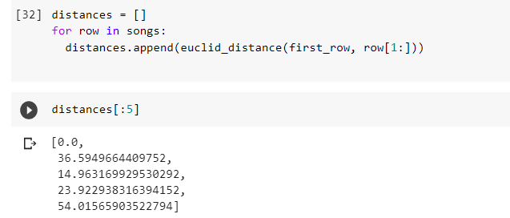
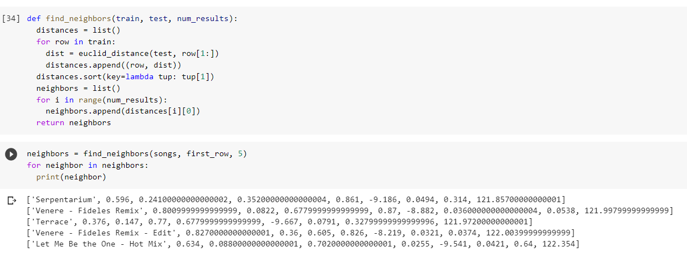

Will You Be My Neighbor?
What is KNN and Why Should We Care?

Do You Know Your Neighbors?
A great number of us, especially those of us who live in cities, barely know anything about people who live in sometimes daunting proximity to us. Having lived in an apartment building for most of my adult life, I couldn't even tell you the names or number of people in the households across the hall or to the left of my own unit. Thankfully for Data Analysts, neighbors don't work the same when applying scikit learn's K Nearest Neighbors (KNN) model to a dateset. KNN takes in a target value and, based on the features of this target, gives us the closest related results, aka "neighbors." While you may not necessarily know much about your neighbors, our target value is closer than it might think to the neighbors KNN locates for it. But how does KNN know who will be the best fit to share this proverbial neighborhood with our target? What sorcery makes it so sure? Let's break down how this happens and see if we can't implement our own version of KNN.
From Rags To Algorithms
In order to begin the construction of our own model, we have to start with the basic rag and bones idea of what a KNN model is. At its core, KNN is a supervised learning model that can predict the class of a value based on its features. That's a good deal of jargon so I'll break it down: Supervised learning - This is a type of training we impose on data that has both the information necessary to find a result and the result itself. There's no guessing at what a pattern might be because the pattern already exists! Class - This is our target, or what we're trying to predict. A type of flower or does a car work or not work are examples of classes. In essence, the class is what we're trying to figure out. Features - Following our class example, features are the characteristics of some "thing" that allow us to identify the class. For flowers this might be the length of a petal (as we see in common datasets like the Iris dataset) or the color, and with the functionality of an auto mobile we might look at does it turn on and speed. Features are significant (mostly, but we'll touch on that later) information that point to a class. If we simplify this concept, a KNN model will take a sample, identify its class, and then compare the features of the original sample to those of the remaining data. Then it will identify the distance between the sample and sort the data into classes based on these features. This can be done by utilizing one of three methods: Minkowski, Manhattan, and Euclidean Distance. Each method has its own benefit and merit, so for the sake of a tutorial we'll stick to the fairly straight forward Euclidean Distance. Euclidean Distance, in essence, is simple. It is simple the most direct distance from one point to the next. Additionally, the math behind the concept is not tremendously difficult as well, given the dimensionality of the space on which the data points exist. Typically we won't be working with any overly complex dimensionalities, so we can deduce that our equation will look something like squaring the difference between the features of the target data to that of every other data point we wish to observe in our KNN model. With that being said, let's start by defining a function that will give us the Euclidean distance of some data. (In this example we will be using the data of a subset of song data created using the Spotify API.)
The purpose of this function is to first iterate through each feature in each row of the dataset and pit it against the features of the target row (in this case the "first row," but that row will be dependent on user input), then square it. Those squared outputs will be added up and then the square root of those added distances will represent the distance of the chosen class to the target class. By using a for loop, we can then iterate through every row of the dataset and get its distance in relation to the target row. Take a look at the following:
After applying our euclid_distance function to our dataset we are given a float value that represents the distance between that row and the target row. You may notice two things from looking at this figure. First, our row input starts at the second index. This is because the first index is a string and the arithmetic we used for our euclidean distance function will only process integer or float values. The second thing you may notice is that our first measure of distance is 0.0. This is simply because we're using the first row of the data set as the target, this lack of distance confirms that our function is working correctly.
Close As Neighbors
Now that we're able to determine how "far" each row in the dataset is from our desired target, we need some way to determine what exactly constitutes a neighbor. We have two factors to consider in terms of this decision: proximity and quantity. This is not a tremendously difficult task as Python has allows us to sort values, and combined with our euclid_distance function we can nest that function into one that helps call the number of "nearest neighbors" for our purposes.
Let's break down what's going on in this function. We're setting a few parameters here with train leading as the dataset which we want to observe and test being the observation we wish to compare, our target. Num_results, in this case, will represent the number of neighbors we wish to return. As previously mentioned, we'll want to instantiate our euclid_distance function into